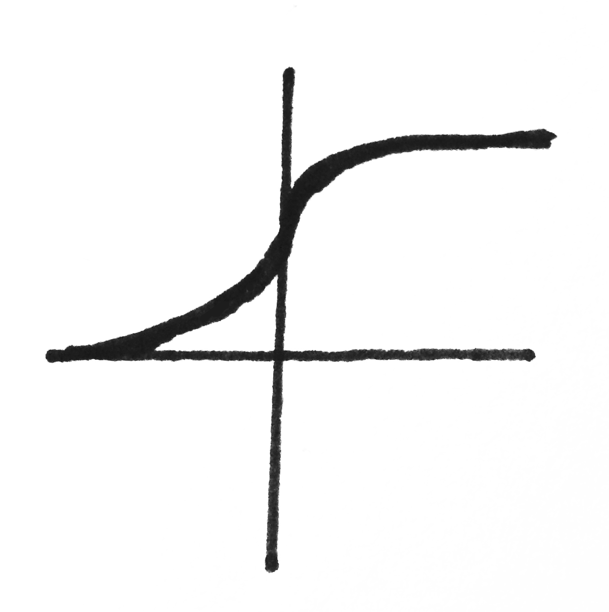
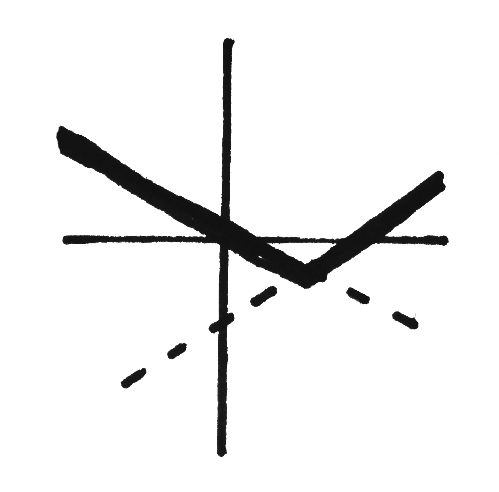

Feedforward Neural Nets
Neural Network Description
$Neural\ networks$, also known as $multilayer\ perceptrons\ (MLPs)$ are networks of perceptron-like units (called $neurons$ or $units$) that are connected to each other so that the output of one unit is fed as input to another. The connections between units are known as $synapses$. These have weights that range from 0 to 1. The weight for a synapse connecting unit $i$ to unit $j$ is denoted $w_{ij}$.
An MLP can be thought of as an acyclic directed graph whose vertices are neurons and edges are synapses. Often, the nodes of this graph are arranged into $layers$ $\ell_1, ..., \ell_k$. Each layer has an associated $bias$ unit. Bias units are constitutively active and share a weighted edge $b_i$ with each unit $i$ of its associated layer. This yields a convenient matrix-based notation for the network parameters. The weights of each layer are stored in vectors, and the weight vectors of a network are stored in a matrix $\bf{W}$.
The number of units in a layer is the $width$ of a network, and the number of layers is its $depth$. Most deep MLPs are composed of at least three layers that fall into one of the following categories:
- The $input\ layer$ is the first layer of a network. This is the layer that is exposed to the raw training and test data.
- The $output\ layer$ is the last layer of a network. The outputs of this layer are used as output for the entire model.
- $Hidden\ layers$ are layers of units that are sandwiched between the input and output layers. These layers compute some intermediary transformation of the data as it propigates through the network. Often, hidden layers are said to output $features$ of the data.
This shows an artificial neural network with three layers. $d$, $o$, and $t$ represent input examples, network outputs, and targets that are indexed by attribute. The superscript of each network and bias weight corresponds to its associated layer.
Activation Functions
What kind of unit should be used to construct an MLP? The perceptron from Chapter two might appear tempting. However, these have limited representational power because they produce a linear combination of their inputs. A network composed of linear perceptrons, then, can only model linear functions. We are often interested in capturing nonlinear patterns in our data, so we will modify the perceptron to produce outputs that are nonlinear with respect to their inputs. The way this is done is by changing the $activation\ function$ of the unit. Recall that the activation function of the perceptron is essentially an on/off gate. If the weighted sum of its inputs is greater than some threshold than the unit outputs 1. Otherwise, it gives -1. There is a large family of alternative activation functions that compute a linear combination of the unit inputs and then pass the result through a nonlinearity. In mathematical terms, while traditional perceptrons simply compute $\bf{w}^T \bf{x}$ and threshold on that to produce output, the units we are interseted in will compute $\sigma(\bf{w}^T \bf{x})$ for some nonlinear activation function $\sigma$ and use this value as its output $o$. Functions of this type work well in MLP units. We will now explore a few units that employ these functions.
The Sigmoid Unit
The activation function of the sigmoid unit is the $sigmoid\ function$ or $logistic\ function$. This is a long-standing activation function that is widely used to squash the inputs into a small range of real-valued outputs [1]. $$\sigma^s(x) = \frac{1}{1 + e^{-x}}$$ The tanh Unit
This unit computes the hyperbolic tangent of its inputs. Like the sigmoid, this function also squashes its inputs. $$ \sigma^t(x) = tanh(x) = 2 \sigma^s (2x) - 1$$
The Rectified Linear Unit (ReLU)
This unit has made big gains in popularity in over the last half-decade due to its strong performance in many application domains [1]. $$ \sigma^r(x) = max(0, x) $$
The Maxout Unit
This unit was proposed in 2013 and has quickly gained notoriety for its strong performance [1]. This unit stores several sets of weights in a three-dimensional matrix (aka tensor) $\bf{W}$. It takes two-dimensional slices of the weight matrix and multiplies each slice by the input. The $k$ vectors that result from these linear combinations describe a series of surfaces in the output space. It then gives a piecewise maximization over each surface. $$ \sigma^m_i({\bf x}) = max_{j \in [1,k]} ({\bf x}^T {\bf W})_{ij} $$ The Softmax Unit
The softmax function is a generalization of the logistic function used in the sigmoid unit. This function makes use of a two-dimensional matrix of weights ${\bf W}$ whose columns are ${\bf w}_1, ..., {\bf w}_k$. Softmax units take in an $n$ dimensional vector ${\bf v}$ and squashes it into a probability distrubtion by generating a new $n$-dimensional vector whose elements are in the range (0, 1) and sum to 1. Each attribute of $\sigma^{soft}({\bf v})$ represents the probability associated with the class of that element. $$ \sigma^{soft}({\bf v})_j = \frac{e^{{\bf x}^T {\bf w}_j}}{\sum_{i=1}^n e^{{\bf x}^T {\bf w}_i}}\ \mathrm{for }\ j = 1 ... n$$ As discussed in Chapter 2, perceptrons can express linear decision surfaces. Multilayer networks, on the other hand, can represent arbitrarily complex functions and a rich variety of nonlinear decision surfaces thanks to these nonlinear activation functions. In fact, with enough layers and data, MLPs have been proven to be universal approximators [2]. Every function can be approximated to arbitrary accuracy with a network of three layers [3]}. This is one big reason why feedforward neural networks are the key technology underlying most commercial applications of deep learning [1].Training Multilayer Perceptrons
As with individual perceptrons, training an MLP involves choosing some ${\bf W}$ and measuring the error between network outputs and target values. Again, the MLP employs gradient descent to update ${\bf W}$ and minimize its error. This corresponds to searching a hypothesis space defined by all possible weight settings for the weights which produces minimal error. This situation can be visualized as an error surface just like the perceptron surface.
Defining the error function $E$ for an MLP is easy. We want to compute error on a per-layer basis. This means that our error function will take the weight vector ${\bf w}_\ell$ of layer $\ell$ as input. We reuse equation 2.1, but sum the errors over all units in layer $\ell$. Note that we're ditching the layer superscript notation from the earlier figure.
$$ E({\bf w}_{\ell}) = \frac{1}{2} \sum_{d \in D} \sum_{k \in layer_\ell} (t_{kd} - o_{kd})^2 $$Note that $t_{kd}$ and $o_{kd}$ are the target and computed values for the $k^{th}$ unit of layer $\ell$ on example $d$.
Computing Gradients With the Chain Rule
In order to traverse the error surface, we need to be able to take derivatives and compute gradients. The $backpropagation$ algorithm is a method for computing gradients in an MLP. The basic idea of backpropagation is that the partial derivative of the error $E$ with respect to the entire weight matrix ${\bf W}$ can be decomposed recursively. This is because the functions that relate $E$ to ${\bf W}$ are derived from neurons that are identical in form. This shows two examples of the chain rule. On the left, $z$ is a function that computs a combination of two intermediary variables ($y_1$ and $y_2$), themselves functions of $x$. On the right, $z$ is the combination of an arbitrary number of $y_i$'s, each a function of $x$.}
We can accomplish this recursive decomposition by making use of the $chain\ rule$. This is a useful mathematical tool for computing derivatives when the function to differentiate is a composition of functions (Fig. 3-3).
This shows two examples of the chain rule. On the left, $z$ is a function that computs a combination of two intermediary variables ($y_1$ and $y_2$), themselves functions of $x$. On the right, $z$ is the combination of an arbitrary number of $y_i$'s, each a function of $x$.}
We can accomplish this recursive decomposition by making use of the $chain\ rule$. This is a useful mathematical tool for computing derivatives when the function to differentiate is a composition of functions (Fig. 3-3).
 This shows a visualization of backpropagation in the last two layers of a neural network. Each unit has been expanded to expose $net$, and gradients of the network error with respect to a pair of weights are displayed.}
This shows a visualization of backpropagation in the last two layers of a neural network. Each unit has been expanded to expose $net$, and gradients of the network error with respect to a pair of weights are displayed.}
Parameter Tuning with Backpropagation
Deriving the weight update rules for gradient descent in a neural network makes use of backpropagation and the chain rule. Recall that in order to descend the error surface in the opposite direction of the gradient, we want to tune the weights such that $$w^{new}_{ij} = w^{old}_{ij} - \eta \frac{\partial E_d}{\partial w_{ij}}$$ We know $w^{old}_{ij}$, and $\eta$ is the learning rate. All that remains is to solve for $\frac{\partial E_d}{\partial w_{ij}}$. This is a measure of influence that the individual weight between unit $i$ and $j$ has on the error of the entire network for training example $d$. This means that output units and hidden units should be computed differently, because output units participate directly in the network output and thus influence $E_d$ directly. Hidden units, on the other hand, have an indirect role in the network output and $E_d$ because they act through downstream output units. The figure above shows how to trace through the network and expand $\frac{\partial E}{\partial w}$ for an output unit weight $w_{ij}$ and a hidden unit weight $w_{ki}$. Since we know all of the definitions of each variable, we can continue by performing each partial derivative. We proceed with sigmoid units (aka $\sigma = \sigma^s$). We begin with output units. Recall that that $net_j = {\bf w}^{T} {\bf x}$ is the intermediary result of unit $j$ before the application of its activation function. Additionally, note that $x_j = o_i w_{ij}$ is the input to unit $j$ coming up through the $i$-$j$ synapse. \begin{align}\notag \frac{\partial E_d}{\partial w_{ij}} &= \frac{\partial E_d}{\partial o_j} \frac{\partial o_j}{\partial net_j} \frac{\partial net_j}{\partial w_{ij}} \\\notag &= \frac{\partial E_d}{\partial o_j} \frac{\partial o_j}{\partial net_j} x_j \\\notag &= \frac{\partial E_d}{\partial o_j} \left( \frac{\partial}{\partial net_j} \sigma^s(net_j) \right) x_j \\\notag &= \frac{\partial E_d}{\partial o_j} o_j(1 - o_j) x_j \\\notag &= \left(\frac{\partial}{\partial o_j} \frac{1}{2} (t_j - o_j)^2 \right) o_j(1 - o_j) x_j \\\notag &= -(t_j - o_j) o_j(1 - o_j) x_j \end{align} Thus, our weight update rule is: \begin{align}\notag w^{new}_{ij} &= w^{old}_{ij} - n \frac{\partial E_d}{\partial w_{ij}}\\ &= w^{old}_{ij} + n (t_j - o_j) o_j(1 - o_j) x_j \end{align} And now for the hidden units: \begin{align}\notag \frac{\partial E_d}{\partial w_{ki}} &= \left( \sum_{p \in downstream(i)} \frac{\partial E_d}{\partial o_p} \frac{\partial o_p}{\partial net_p} \frac{\partial net_p}{\partial o_i} \frac{\partial o_i}{\partial net_i} \right) \frac{\partial net_i}{\partial w_{ki}}\\\notag \frac{\partial E_d}{\partial w_{ki}} &= x_i\sum_{p \in downstream(i)} \frac{\partial E_d}{\partial o_p} \frac{\partial o_p}{\partial net_p} \frac{\partial net_p}{\partial o_i} \frac{\partial o_i}{\partial net_i} \\\notag \frac{\partial E_d}{\partial w_{ki}} &= x_i\sum_{p \in downstream(i)} \frac{\partial E_d}{\partial o_p} \frac{\partial o_p}{\partial net_p} \frac{\partial net_p}{\partial o_i} o_j (1 - o_j) \\\notag \frac{\partial E_d}{\partial w_{ki}} &= x_i \sum_{p \in downstream(i)} \frac{\partial E_d}{\partial o_p} \frac{\partial o_p}{\partial net_p} w_{ip} o_j (1 - o_j) \\\notag \frac{\partial E_d}{\partial w_{ki}} &= x_i\sum_{p \in downstream(i)} \frac{\partial E_d}{\partial o_p} o_p (1 - o_p) w_{ip} o_j (1 - o_j) \\\notag \frac{\partial E_d}{\partial w_{ki}} &= x_i \sum_{p \in downstream(i)} -(t_p - o_p) o_p (1 - o_p) w_{ip} o_j (1 - o_j) \\\notag \end{align} And our weight update rule is: \begin{align}\notag w^{new}_{ij} &= w^{old}_{ij} - n \frac{\partial E_d}{\partial w_{ij}}\\ &= w^{old}_{ij} + n x_i \sum_{p \in downstream(i)} (t_p - o_p) o_p (1 - o_p) w_{ip} o_j (1 - o_j) \end{align}References:
- Goodfellow, Ian, Aaron Courtville, and Yoshua Bengio. Deep Learning. Book in preparation: MIT Press, 2015. Print.
- Mitchell, Tom M. $Machine\ Learning.$ New York: McGraw-Hill, 1997. Print.
- Cybenko, George. "Approximation By Superpositions Of A Sigmoidal Function". Mathematics of Control, Signals, and Systems 2.303 (1989): n. pag. Print.